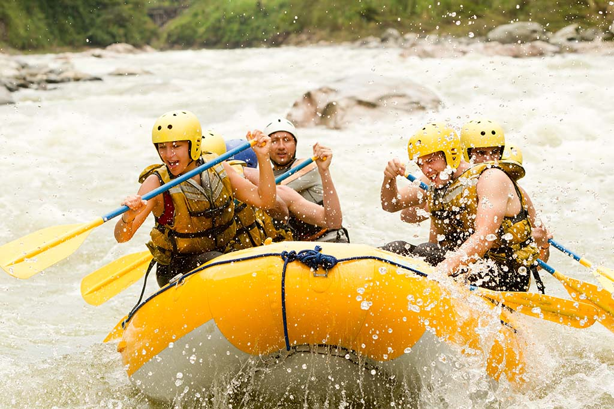

For Booking
Ready for an adventurous trip? Contact us now to book your spot!
Contact UsGrade 5 White Water Rafting
Considered one of the best one day white water trips in the world, no safari to Uganda would be complete without truly experiencing the Nile from its source.
With a commitment to safety,quality and value for money, Nile River Explorers focus on providing our clients with an all inclusive experience of the Nile.
We take a personal interest in every detail of your day to ensure your time with us is simply unforgettable.
Urubamba River Rafting

The Urubamba River runs from the high Andean mountain ranges down through the Sacred Valley of the Incas, through Machupicchu and into the jungle.
It has some exciting white waters depending on the section of the river being made and the time of year.
One of the most popular Rafting sections during the season is the Chuquicahuana Also known as “Chuqui” class IL in the Upper Urubamba River.
There are good class III rapids and the water is not contaminated.
The Urubamba River also called Urupampa, born in the knot of Vilcanota, crossing the major part of territory under the name Vilcanota River.
Passing through the town of Urubamba, reason why is called the Urubamba River.
The turbulence of the Urubamba River, through the South Valley of the Incas, let to practice some activities such as rafting,
which is one of the tourist attractions most interesting of adventure in Peru.
Grade 3 White Water Rafting
This is the ideal one day white water river trip for families with children as young as eight and those who want to experience white water rafting on the Nile
without the intensity of grade 5 rapids. Warm water, safe pools to swim, islands full of birds and fisherman in dugouts combine with fun and white water adventure
to make this the perfect family and friends day out on the Nile. Nile River Explorers is the only company that starts your day with a 40 metre water slide into the Nile.
The grade 3 rapids are fun without being overwhelming so there’s plenty of white water action, but also time to sit back, relax and enjoy your surrounds and have the
occasional water fight. Our expert photographers capture all the smiles and action so that you can relive the adventure for years to come.
Nile River Explorers is the only company that starts your day with a 40 metre water slide into the Nile.
Family Float
For the not so adventurous or the not so tall, why not spend your time drifting down the Nile. Beautiful islands, birdlife and flat, slow moving water make it the ideal short
family outing for both young and old.This two hour family float is the perfect adventure for small kids. With a minimum age of 4, and plenty of opportunity to splash in the
waters of the Nile,this trip provides a wonderful morning adventure for families. This trip is a great experience for younger families and grandparents alike.
For those who wish, there is plenty of places for the kids to swim, always under the watchful eyes of our safety kayakers.
| Trip Name | Duration | Details | Price |
|---|---|---|---|
| Grade 5 White Water Rafting | 4 - 5 hours on the river | Dress: • Light clothing, shorts & t-shirt are ideal. • Lots of suntan lotion & a cap. Fitness Level: • 16 years minimum. • Under 18’s – guardian conditions apply. • No rafting or swimming experience necessary, however clients should be water confident and reasonably fit. Pack: • Towel & a change of clothes for the end of the day. • Suntan lotion • Any medication you require. | $140 |
| Urubamba River Rafting | 1 days | A complete set of dry clothing a pair of sandals or tennis shoes for the river sun block a small towel a Swimming suit to wear under the wet suit A good positive mental aptitude Notes We will pick up our customers from their hotel as long as they are in the city centre. At the end of the tour, we leave our customers in a place near the Main Square, it is easier to return to your hotel walking than go by bus, because the traffic is terrible. If your hotel is far from the city centre, take extra cash to take a taxi. The pickup and arrival times are referential, this will depend on the traffic that can be found in the streets or the delay of other customers, our assistant will arrive on time to your hotel, but sometimes the transport could be delayed a few minutes. | $300 |
| Grade 3 White Water Rafting | 4 - 5 hours on the river | Dress: • Light clothing, shorts & t-shirt are ideal. • Lots of suntan lotion & a cap. Fitness Level: • 8 years Minimum weight 30 kg. • Under 18’s – guardian conditions apply. • We recommend that children under 16 be accompanied by an adult. • No rafting experience necessary, however clients should be water confident & reasonably fit. Pack: • Towel & a change of clothes for the end of the day. • Suntan lotion • Any medication you require. | USD $140.00 per adult USD $95.00 per child *Children under 16 year |
| Family Float | 4 - 5 hours on the river | Dress: • Light clothing, shorts & t-shirt are ideal. • Lots of suntan lotion. Fitness Level: • 4 years minimum. • Under 18’s – guardian conditions apply. • We recommend that children under 16 be accompanied by an adult. No rafting experience necessary, however clients should be water confident. Pack: • Towel & a change of clothes for the end of the day. • Any medication you require. • Money for optional extra’s | USD $30.00 per adult USD $20.00 per child |